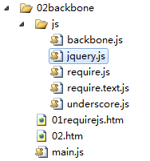
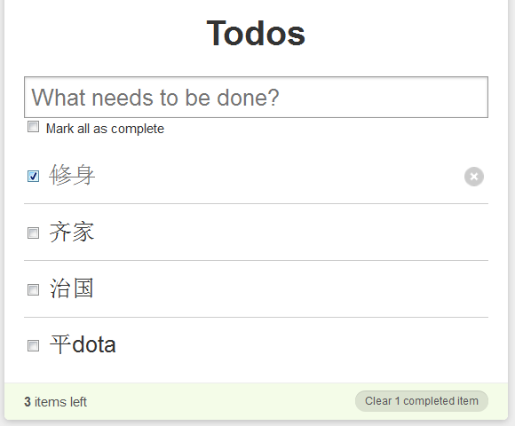
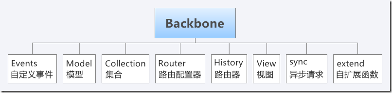
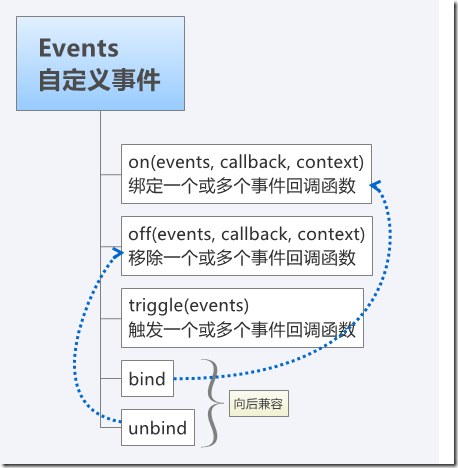
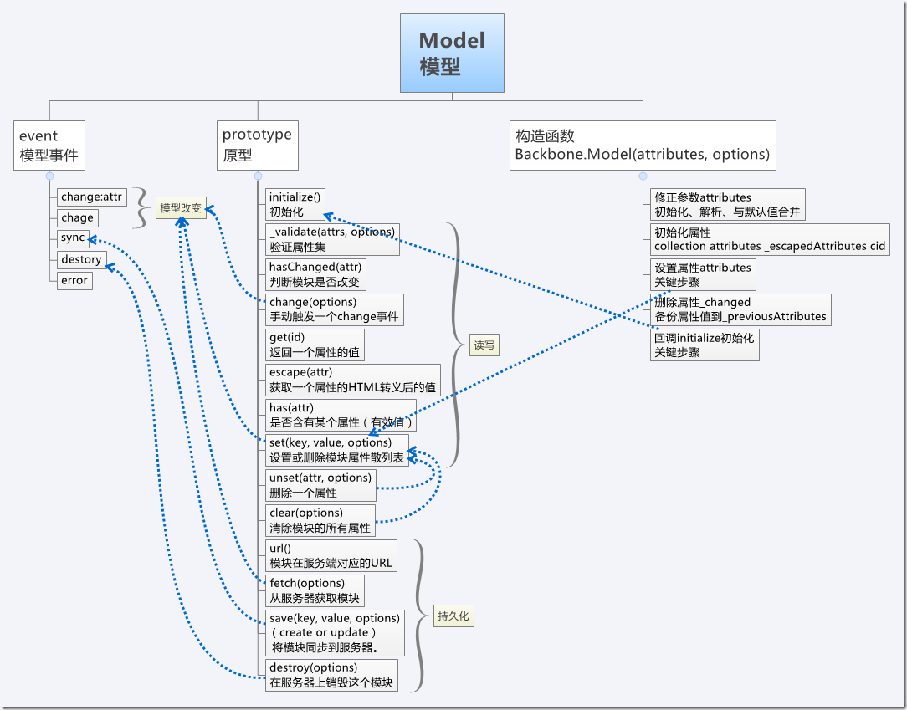
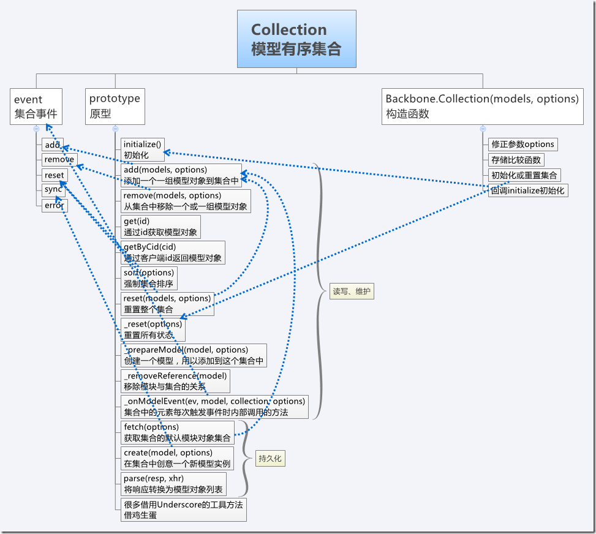
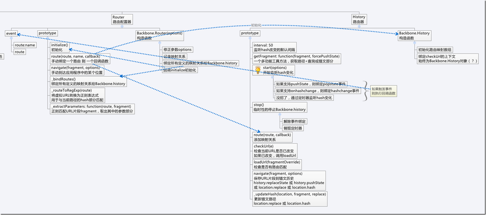
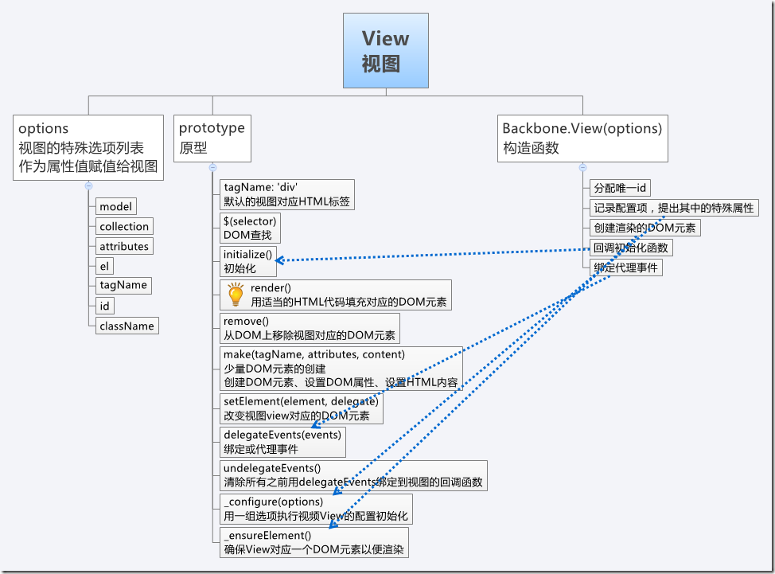

前言
终于到周末了，几经转折老夫工作终于落实，干起了移动前端，于是真正进入了HTML5的开发时代。
这周一开始入职，进来后发现真的像农村的来到了城市，很多东西不懂的，又要落实租房的问题，生活工作拧到了一坨。
由于上次去河南折腾了一番，经济也在亮红灯，于是第一周有点浑浑噩噩的感觉，还没做什么就结束了。
新的团队的人感觉都有点生猛，老同事完全没压力，另一个新同事适应的很快，居然都能进入框架开发了，难道这边真这么多高手？小的这边亚历山大啊。
现在项目使用的是jquery+requireJS+backbone，前两天我们初略的学习了下requireJS，要说好熟悉纯粹是扯淡，只不过有个大概印象罢了。
我们今天的任务是学习一番backbone，等熟悉后明天就把这几个家伙串起来试试，因为下周二就有任务了，不努力就等嗝屁吧。
Backbone简介
中文API：http://www.csser.com/tools/backbone/backbone.js.html
英文API：http://backbonejs.org/
Backbone是构建javascript应用程序的一个优秀的类库。他简洁、轻量级、功能实在。
backbone采用MVC模式，本身提供了模型、控制器和视图从而我们应用程序的骨架便形成。
backbone依赖于underscore，他是一个类库，提供了60多个函数处理数组操作、函数绑定，以及javascript模板机制。
于是我们来个图看看几个好基友吧：

有了初步印象后，我们来一步步看看他都干了些神马。
模型
模型是保存应用程序数据的地方。我们可以把模型看做对应用程序原始数据的精心抽象，并且添加了一些工具函数和事件。
我们可以使用Backbone.Model的extend方法来创建Backbone模型：
var User = Backbone.Model.extend({ initialize: function () { } });
extend的第一个参数是一个对象，他成为了模型实例的属性；
第二个参数是可选的类属性的哈希，通过多次调用extend可以生成模型的子类，他们将继承父亲所有类和实例属性：
var User = Backbone.Model.extend({ //实例属性 instanceProperty: 'foo' }, { //类属性 classProperty: 'bar' }); assertEqual(User.instanceProperty, 'foo'); assertEqual(User.classProperty, 'bar');
当模型实例化时，他的initialize方法可以接受任意实例参数，其工作原理是backbone模型本身就是构造函数，所以可以使用new生成实例：
var User = Backbone.Model.extend({ initialize: function (name) { this.set({name: name}); } }); var user = new User('刀狂剑痴'); assertEqual(user.get('name'), '刀狂剑痴');
Ps： assertEqual判断相等
模型和属性
使用set和get方法设置获取实例的属性：
var user = new User(); user.set({ name: '叶小钗' }); user.get('name'); //叶小钗 user.attributes;//{name: '叶小钗'}
我们看到其实user.arributes是一个对象字面量，我们不会直接操作他，因为我们使用get/set方法可以进行我们的验证流程。
我们使用validate方法来校验一个实例属性，默认情况没有任何验证，若是我们需要验证的话：
var User = Backbone.Model.extend({ validate: function (attr) { if (!attr.name || attr.name.length < 3) { return '名称长度过短'; } } });
如果属性合法，validate不会理睬之，不合法可以返回错误字符串或者Error对象，校验失败get/set方法就会触发error事件：
var user = new User(); user.bind('error', function (model, error) { //错误处理 }); user.set({ name: '0' }); //给特定集合添加一个错误处理程序 user.set({ name: '0' }, { error: function (model, error) { } });
使用hash名为default的对象来指定默认属性，在创建一个实例模型时，任何没有指定值的属性都会被设置为默认值：
var Chat = Backbone.Model.extend({ defaults: { name: '叶小钗'} }); assertEqual((new Chat).get('name'), '叶小钗');
集合
在backbone中，模型实例的数据存放在多个集合中，为什么模型之间要使用独立的集合，其原因有点复杂，但在实际中我们经常这么做（虽然我还没做过）。
例如创建Twitter需要两个集合followers和followees，两者都有User的实例填充数据，虽然两个集合都是来自同一模型，但是各自包含了不同的实例数组，所以独立形成集合。
针对模型，可以通过扩展backbone.collection来创建一个集合：
var Users = Backbone.Collection.extend({ model: User });
在上面的例子中，我们覆盖了model属性来指定与集合相关联的模型（这里是User模型），虽然这个步骤不是必须的，但是为该集合设置一个默认的模型指向往往能派上大用场。
通常集合会包含单个模型的一个实例，而不是不同模型的多个实例。
在创建一个集合时，可以传递一个模型数组，比如backbone模型，如果定义了一个初始化实例函数，在初始化时就会调用之：
var users = new Users([{ name: '叶小钗' }, { name: '素还真'}]);
另一种方法是使用add方法为集合添加模型：
users.add({ name: '叶小钗' });
users.add([{ name: '叶小钗' }, { name: '素还真' }]);
在为集合添加模型时会触发add事件：
users.bind('add', function (user) {
//...
});
//移除一个模型
users.bind('remove', function (user) {
//...
});
//根据模型id获取模型
var user = users.get('moduleId');
//集合中模型被修改后出发change事件
var user = new User({ name: '叶小钗' });
var users = new Backbone.Collection();
users.bind('change', function (rec) {
//改变一个记录
});
users.add(user);
user.set({ name; '素还真'});
控制集合内部顺序
一个集合内部元素顺序可以通过comparator方法控制，该方法的返回值便是你希望集合内部排序的规则：
var Users = Backbone.Collection.extend({ comparator: function (user) { return user.get('name'); } });
返回值可以是值或者数字，具体例子我们下次有机会来试试看。
视图
backbone的视图并不是模板，而是一些控制类，他们处理模型的表现。
在很多MVC中视图一般指html或者模板，他们在控制器中处理事件和渲染，但backbone中视图：
视图代表一个UI逻辑块，负责一个简单的DOM内容
var UserView = Backbone.View.extend({ initialize: function () { }, render: function () { } });
不管视图有没有被插入页面，每个视图都知道当前的Dom元素，即this.el，el是从视图的tagName、className或者id等属性中创建的元素，没有这些值el就是空div：
var UserView = Backbone.View.extend({ tagName: 'span', className: 'users' }); var userView = new UserView();//<span class="users"></span>
若是希望视图绑定到页面上已存在的元素上，直接指定el就好（必须在页面加载后才能指定哦，不然找不到）：
var UserView = Backbone.View.extend({ el: $('.usets') }); //也可以实例化一个视图时传递el（tagName、className\id） new UserView({ id: 'id' });
渲染视图
每个视图都有一个render方法，默认情况下没有任何操作，一旦视图需要重绘便会调render方法，不同的视图用不同功能的函数来覆盖函数，以处理模板渲染，并使用新的html来更新el：
var TodoView = Backbone.View.extend({ template: _.template($('#tmpt').html()), render: function () { $(this.el).html(this.template(this.model.toJSON())); return this; } });
backbone本身并不知道我们是怎么渲染视图的，我们可以自己生产元素也可以使用模板类库（一般用这个）。
在前面的代码中，我们使用了this.model的本地属性，他指向一个模型实例，在实例化时传递到视图中，模型的toJSON方法实际上返回模型未加工时的原始属性，可以在模板中使用：
new TodoView({ model: new Todo });
委托事件
通过委托，backbone的视图提供了一种添加事件到el的简单快捷的方法：
var TodoView = Backbone.View.extend({ events: { 'change input[type=checkbox]': 'toggleDone', 'click .destroy': 'clear' }, toggoleDone: function () { }, clear; function () {} });
events对象为{'eventType selector': 'callback'}这种格式，selector是可选的，不提供便绑定值el上。
委托利用了事件冒泡机制，意思是可以一直触发而不管el内容是否改变（估计类似于delegate吧）。
上面的callback事件触发时，他的上下文是视图当前上下午，所以this中的this.model/el都可以使用。
绑定和上下文
事实上，每当视图的模型发生变化时，就会触发change事件，然后调用该函数，这就意味这应用程序的视图及HTML和与之对应的模型数据是同步的。
var TodoView = Backbone.View.extend({ initialize: function () { _.bindAll(this, 'render', 'close'); this.model.bind('change', this.render); }, close: function () { } });
需要注意在回调函数中的上下文已经改变，Underscore提供一个函数：
_.bindAll(context, func);
他将函数名字和一个上下文绑定，bindAll保证了所有给定的函数总是在指定的上下文中被调用，因为函数上下文总在胡乱变化，这样做很有用。
模型销毁需要视图绑定delete事件，触发时删除el即可：
var TodoView = Backbone.View.extend({ initialize: function () { _.bindAll(this, 'render', 'close'); this.model.bind('change', this.render); this.model.bind('delete', this.remove); }, remove: function () { $(this.el).remove() } });
控制器
backbone的控制器将应用程序的状态和url的hash片段关联在一起，使url地址可分享，也可以作为书签使用。
本质上，控制器是一些路由和函数组成，当导航到这些路由时那些函数便调用：
routes : { 'help': 'help', //#help 'search/:query': 'search', //#search/kiwis 'search/:query/p:page': 'search', //#search/kiwis/p7 'file/*peth': 'file' //#file/any/path.txt }
参数以“:”开始，然后是参数名，当路由被调用时，所有参数都会传递到他的函数，*为通配符，和参数一将和匹配的值一起传递到路由的函数中。
路由是以哈希对象中定义顺序倒叙进行解析的，来创建一个控制器吧：
var PageController = Backbone.Controller.extend({ routes: { 'help': 'help', //#help 'search/:query': 'search', //#search/kiwis 'search/:query/p:page': 'search', //#search/kiwis/p7 'file/*peth': 'file' //#file/any/path.txt }, index: function () { }, help: function () { }, search: function () { } });
当用户被导航到“http://....com#search/param”时，不管手输还是后退都会调用search函数，并传递其参数param
若是希望ajax与seo更加友好，路由前缀就必须是“!/”，同时服务器端还需要做一点调整。
服务器同步
默认情况下，模型发生变化（保存），backbone就会使用ajax与服务器通讯（Backbone.sync），成功便更新客户端模型。
要使用这个属性便需要定义url，并且在服务器端处理rest形式请求，backbone会处理余下任务：
var User = Backbone.Model.extend({ url: '/users' });
url既可以是一个字符串也可以是一个函数返回字符串，backbone增删查改几个函数对应映射：
create => post /collection
read => get /collection[/id]
update => put /collection/id
delete => delete /collection/id
例如，我们要创建一个User实例，backbone会发送一个post请求道/uesrs，更新一个user实例，会发送至/users/id节点，服务器响应时会返回一个json格式的对象
若是要使用save(attr, option)函数将模型保存至服务器，可以随意传递一个由属性和请求项组成的hash对象，若是模型有id，假设该模型在服务器上以存在，存在就是put请求，不然就post请求添加数据：
var user = new User(); user.set({ name: '叶小钗' }); user.save(null, { success: function () { //保存成功 } });
所有save都是异步的，通过success或者failure来监听ajax回调，我们一般与jquery合用了。
填充集合
我们已经知道了如何创建/更新模型，但是第一次我们如何获取模型数据呢？
这就是backbone集合出现的原因，他们用来请求远程数据并保存至本地，和模型类似，必须给集合指定一个url来设置其数据源，若是没有则默认使用与之关联的模型url：
var Followers = Backbone.Collection.extend({ model: User, url: '/user' }); //fetch用于刷新模型，该函数会请求数据，若是远程数据和当前模型不一致，将触发change事件 Followers.fetch();
集合的fetch函数将发送一个get请求道服务器，获取远程数据，最后刷新集合触发refresh事件。
可以使用refresh函数手动刷新集合，传入一个模型对象即可，在第一次设置页面时候用这个方法很方便，这里和页面加载后发送get请求不一样，我们可以传递json对象给refresh，而预先填充到集合中，比如：
Users.refresh({name; ''});
自定义行为
在backbone视图读取或者保存模型到服务器时都会调用backbone.sync方法，我们可以覆盖该方法来改变其默认行为（存入xml、本地存储）：
/* method 便是crud方法（create、read、update、delete） model 需要保存的模型 options 请求可选项，包括成功失败函数 */ Backbone.sync = function (method, model, options) { options.success(model); };
每个模型或者集合只能覆盖各自的sync函数。
我们来看一个扩展HTML5本地存储的例子：
//所有待完成的项都保存至本地存储命名空间“todos”中 Toto.prototype.localStorage = new Store('todos'); //重写backbone.sync Backbone.sync = function (method, model, options) { var resp, store = model.localStorage || model.collection.localStorage; switch (method) { case 'read': resp = model.id ? store.find(model) : store.findAll(); break; case 'create': resp = store.create(model); break; case 'update': resp = store.update(model); break; case 'delete': resp = store.destroy(model); break; } if (resp) { options.success(resp); } else { options.error('not find'); } }
简单实战-官方版
首先，我们来看一个官方给出的例子：

具体代码各位可以去下载，其中用到了很多类库我们也暂时不去管它，我们现在就来试试能不能做。
这是一个简单的to-do列表应用程序，我们希望能进行增删查改操作，在页面刷新后仍能保持数据。
页面结构（核心）
1 <html lang="en"> 2 <head> 3 <meta charset="utf-8"> 4 <title>Backbone.js Todos</title> 5 <link rel="stylesheet" href="todos.css" /> 6 </head> 7 <body> 8 <div id="todoapp"> 9 <header> 10 <h1> 11 Todos</h1> 12 <input id="new-todo" type="text" placeholder="What needs to be done?"> 13 </header> 14 <section id="main"> 15 <input id="toggle-all" type="checkbox"> 16 <label for="toggle-all"> 17 Mark all as complete</label> 18 <ul id="todo-list"> 19 </ul> 20 </section> 21 </div> 22 <script src="js/json2.js" type="text/javascript"></script> 23 <script src="js/jquery.js" type="text/javascript"></script> 24 <script src="js/underscore.js" type="text/javascript"></script> 25 <script src="js/backbone.js" type="text/javascript"></script> 26 <script src="js/backbone.localStorage.js" type="text/javascript"></script> 27 <script src="js/todos.js" type="text/javascript"></script> 28 </body> 29 </html>
页面结构很简单，其核心为：
一个文本框（#new-todo），用于创建新to-do
一个列表（#todo-list），用于展示
下面是基本的Todo模型，其拥有content与done属性，同时提供toggle方法设置done属性：
//todo是备忘录的意思哦 var Toto = Backbone.Model.extend({ defaults: { done: false }, toggle: function () { //设置做了点击就没做，设置没做点击就做了... this.save({ done: !this.get('done') }); } });
然后我们定义一个todo的集合，也是保存todo模型的地方：
var TodoList = Backbone.Collection.extend({ model: Todo, localStorage: new Store('todos'), //所有项目保存至todos命名空间 //过滤已完成的项目 done: function () { return this.filter(function (todo) { return todo.get('done'); }); }, remaining: function () { return this.without.applay(this, this.done); } }); var Todos = new TodoList();
因为这里用的是本地存储所以引入了backbone.localstorage，下一步我们做用于显示的视图
1 var TodoView = Backbone.View.extend({ 2 tagName: 'li', //视图时一个个li标签 3 template: $('#item-template').template(), //获取模板 4 events: { 5 'change .check': 'toggleDone', 6 'dblclick .todo-content': 'edit', 7 'click .todo-destroy': 'destroy', 8 'keypress .todo-input': 'updateOnEnter', 9 'blur .todo-input': 'close' 10 }, 11 initialize: function () { 12 //确保在正确作用域 13 _.bindAll(this, 'render', 'close', 'remove'); 14 //监听存储模板修改以确定是否修改el 15 this.model.bind('change', this.render); 16 this.model.bind('destroy', this.render); 17 }, 18 render: function () { 19 //使用存储模板更新el 20 var el = jQuery.tmpl(this.template, this.model.toJSON()); 21 $(this.el).html(el); 22 return this; 23 }, 24 tiggleDone: function () { 25 this.model.toggle(); 26 }, 27 edit: function () { 28 $(this.el).addClass('editing'); 29 this.input.focus(); 30 }, 31 close: function () {//关闭编剧状态 32 this.model.save({ content: this.input.val() }); 33 $(this.el).removeClass('editing'); 34 }, 35 //按下回车键结束编辑 36 updateOnEnter: function (e) { 37 if (e.keyCode == 13) 38 e.target.blur(); 39 }, 40 remove: function () { 41 $(this.el).remove(); 42 }, 43 destroy: function () { 44 this.model.destroy(); 45 } 46 });
我们将血多事件委托给管理更新，完成和删除todo视图，例如每当复选框变化toggleDone就会调用，并切换done属性，最后又会触发change事件，导致视图重新渲染。
来看看我们的模板：
<script type="text/template" id="item-template"> <div class="view"> <input class="toggle" type="checkbox" <%= done ? 'checked="checked"' : '' %> /> <label><%- title %></label> <a class="destroy"></a> </div> <input class="edit" type="text" value="<%- title %>" /> </script> <script type="text/template" id="stats-template"> <% if (done) { %> <a id="clear-completed">Clear <%= done %> completed <%= done == 1 ? 'item' : 'items' %></a> <% } %> <div class="todo-count"><b><%= remaining %></b> <%= remaining == 1 ? 'item' : 'items' %> left</div> </script>
PS：我这里写了大概思想，有不一致的地方各位看看就行。
最后我们来一个终止：
1 var AppView = Backbone.View.extend({ 2 el: #('#todoapp'),//绑定至现有骨架 3 events: { 4 'keypress #new-todo': 'createOnEnter', 5 'click .todo-clear a': 'clearCompleted' 6 }, 7 /* 8 初始化时，将相关事件绑定给todos集合，当添加或者修改集合中元素时触发事件， 9 通过载入可能存在本地存储中的记录来初始化数据 10 */ 11 initailize: function () { 12 _.bindAll(this, 'addOne', 'addAll', 'render'); 13 this.input = this.$('#new-todo'); 14 Todos.bind('add', this.addOne); 15 Todos.bind('refresh', this.addAll); 16 Todos.fetch(); 17 }, 18 addOne: function (todo) { 19 var view = new TodoView({model: todo}); 20 this.$('#todo-list').append(view.render().el); 21 }, 22 //...... 23 }); 24 25 var App = new AppView();
当页面首次加载后，Todos集合将填充数据，然后触发refresh事件，将调研addAll来获取todo模型，生成todoview视图，并将它们添加至#todo-list中。
当有新的todo模型添加至Todos时，会触发add事件，调用addOne做到最后的视图更新。
简单总结
至此跌跌撞撞我们将官网的例子看了，不知道各位买账不？？？
反正我有点不买账，因为我感觉自己还是有点迷糊，所以我们下面再自己写一个例子试试吧。
简单实战-demo
稍后继续。。。。。。
结语
好了，我们第一阶段的学习基本结束，其中还差一个实战的例子我稍后补上，于是我们就应该对backbone有初步的认识了
明天我们的任务是结合requireJS于backbone做一点点小练习，于是我们后面就能说我们精通requireJS于backbone了。。。。。。
补充
刚刚在这里看到了几张不错的图，给贴出来吧：
[原创]Backbone源码分析-Backbone架构+流程图





